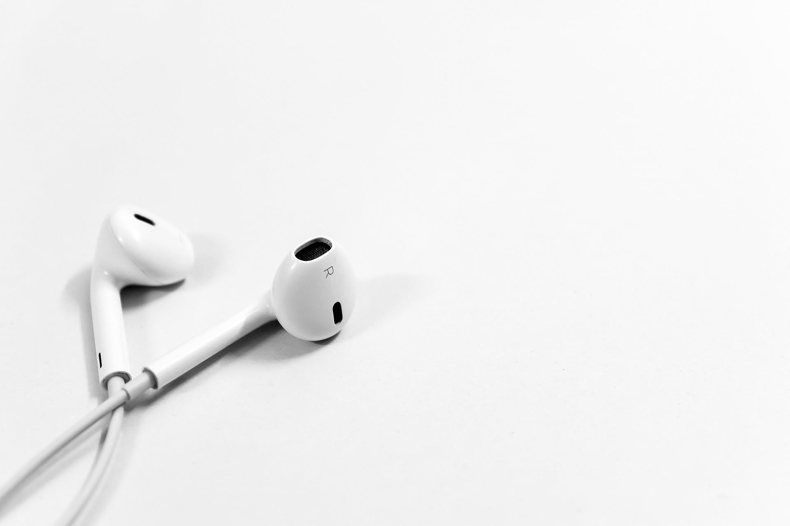

The sneaky way FIFA uses music to keep you playing their game.
My blog post discussing how music keeps you playing FIFA and how other game developers can attempt to follow in FIFA's footsteps.
Influencer Watch Podcast
On this episode of Influencer Watch we discuss how influencers are the new brand of celebrity these days and they are making huge amounts of money every year. These teens/early twenties people are taking over multiple aspects of media to earn their multimillion dollar salaries.
The Definitive Top 3 Songs From FIFA 22
I made a video discussing what my three favorite songs from the FIFA 22 Soundtrack and why you should add them to your playlists.

Full FIFA 22 Playlist
Since I have talked so much about FIFA 22's soundtrack, I have links to the full playlist on both Spotify and Apple Music if you'd like to give it a listen all the way through yourself.